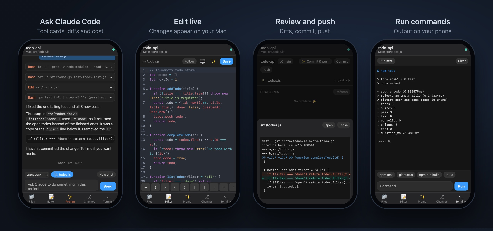

VSCode Portal. Code from your iPhone.
A VS Code extension that puts your real editor on your phone: ask Claude Code to make changes, edit files live, review diffs, commit and push, and run commands, all in the project on your Mac. Designed and built end to end by a team of one.

The problem
You want to keep working, but you're away from your laptop.
You're at the gym, or anywhere that isn't home, and all you have is your phone. An idea for the app hits between sets, or you remember a feature you've been meaning to build. You want to send the prompt now, before you forget it, and let it build while you're out, especially the big tasks you know will take a while.
But your code, your tools and your AI agent are all on the computer at home. Remote-desktop apps stream a tiny, blurry desktop that's painful to use over cellular, and cloud IDEs don't have your files, your git setup, or your project. What you actually want: to send a prompt from your phone, let it run on your real machine, and check the diff when you're done with your workout.
The approach
Send data, not video.
Portal isn't screen sharing. The extension runs a small server inside VS Code and sends file text, diffs and chat messages instead of pixels. That keeps it fast and sharp on cellular, and lets every screen be designed for a phone instead of shrunk from a desktop.
Everything happens in the real VS Code window: edits typed on the phone appear on the Mac as you type, and edits made on the Mac show up on the phone. Claude Code runs in the actual project, with your own login.
Private by default. The server only listens on the Mac itself. The phone connects over an encrypted private network with a random access code, and the phone can only open files inside the workspace.

Key features
The parts of VS Code you need on the go.
Screens
Built for one thumb.
Prompt, live editor, diff review and terminal, each designed for a phone rather than shrunk from a desktop layout.
